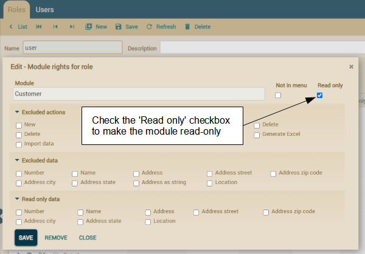
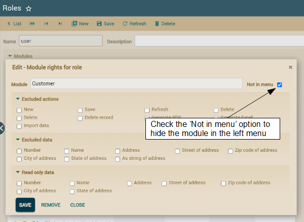
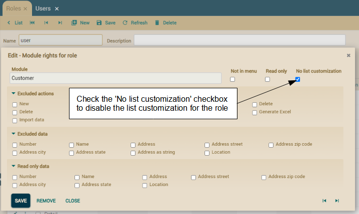
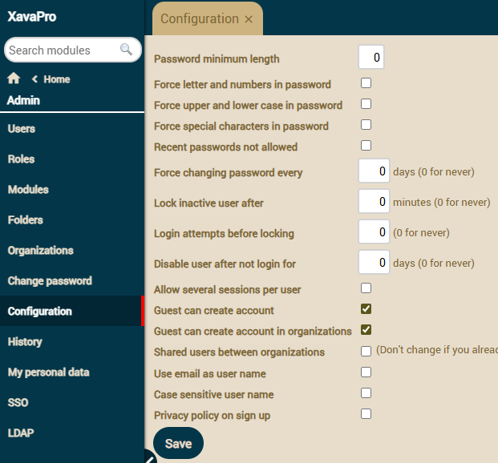
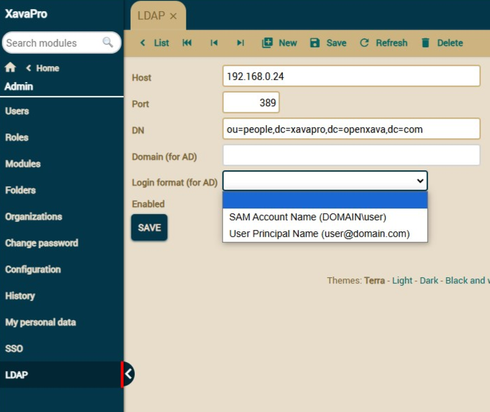
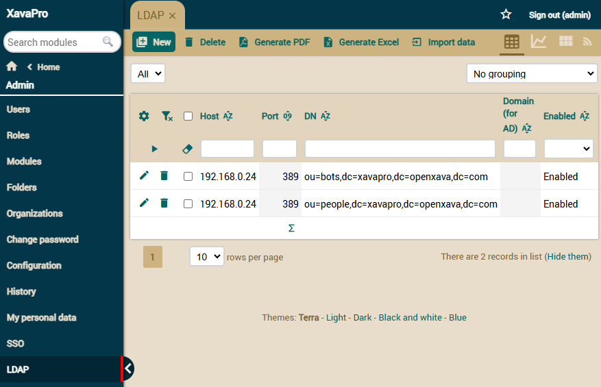
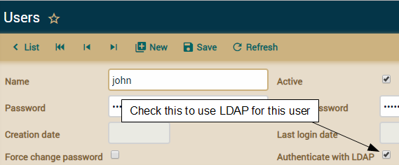
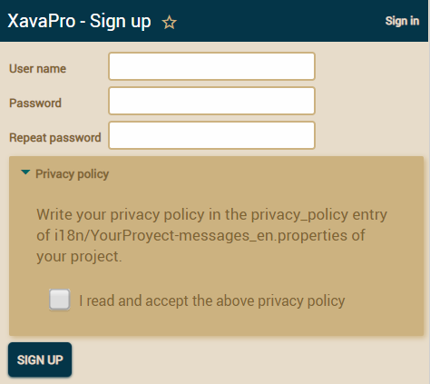
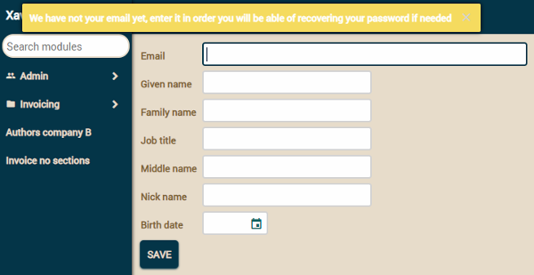
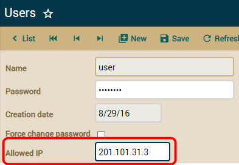

All the features in this article are available only in XavaPro
User
management
XavaPro adds the modules
Roles,
Modules and
Users to your application, in a folder called
Admin. These modules allows you to configure the access levels
for different user types.

Usually, you create a new role and assign some modules to it. Then, go to
the
Users module, choose a user and assign the new role to him.
By default, there are two roles already created:
admin with
access to
Users, Roles, Modules and
Folders , and
user
with access to all the modules of your application. New modules are not
added automatically to
user role (or any role), so you have to add
new modules explicitly to role
user (or any other role) using the
Roles module.
If you remove access to the default module of an entity, modifying and
creating references to that entity is not allowed. For example, if the
users of a particular role cannot access the
Customer module,
they cannot create or modify customers from the
Invoice module
either (
new in v5.3).
The above user management system is only available in
XavaPro,
with plain OpenXava you have to add users in the
naviox-users.properties
file inside
properties folder of your project.
Restricting
user access to actions
If you want to restrict
users of certain
roles
from executing certain actions, go to the
Roles module and
choose that role to edit in detail mode. Then click in the module where
you want to restrict those actions, and a dialog like the next one will
appear:

Select the actions you want to exclude and click on
Save. From
now on, all the users of that role will not be able to execute those
actions in that module.
Restricting access to
New and
Save restricts access
for creating and modifying from references also, if you do it for the
default module of that entity. For example, if you restrict access to
Save
action in
Customer module, the user will not be able to modify
Customer
data from
Invoice module
(new in v5.3).
Restricting user access to actions is only available in
XavaPro.
Restricting
user access to properties, references and collections (new in v5.5)
If you want to restrict
users of certain
roles
from accessing certain properties, references or collections, go to the
Roles
module and choose that
role to edit in detail mode. Then
click in the module where you want to restrict those members, and a dialog
like the next one will appear:

Select the members you want to exclude in
Excluded data and
click on
Save. From now on, all the users of that role will not
be able to access those members in that module. Note you also have
Read
only data to allow the users to see the data but not to change it.
Restricting user access to properties, references or collections is only
available in
XavaPro.
Read only module with one click
(new in v7.2)
Since version 5.5, you have the capability to designate specific data as
read-only for a particular role and control the actions available for that
role. With this feature, you can easily make a module read-only for a
specific role. However, this approach had its drawbacks, especially when
new fields were introduced to the entity, as it required constant
configuration adjustments.
To address these challenges, starting from version 7.2, the module rights
configuration dialog for a role now includes a convenient checkbox labeled
Read only. This checkbox enables you to mark a module as read-only
for the selected role with a single click, simplifying the process
significantly:

A read only module has all member not editable and only has navigation and
print actions.
Read only modules are only available in
XavaPro.
Hiding
a module in the menu without restricting it (new in v6.5)
If you want that a module will be not shown in the menu for
users
of certain
roles but that at the same time that module
would be accessible by those users, typing the URL in the browser, for
example. Go to the
Roles module and choose that
role
to edit in detail mode, once there click on the module you want to hide in
the menu, and a dialog like the next one will appear:

Check the
Not in menu option and click on
Save. From now
on, all the users of that role will not see the module,
Customer
in our example, in the left menu, however it will be still accessible, so
if the user goes to
http://yoursite.com/YourApp/m/Customer with
his browser the module will work.
Hiding modules in the menu is only available in
XavaPro.
Disable list customization (new
in v7.4)
OpenXava allows users to customize the list to their liking by adding,
removing, or moving columns. Of course, XavaPro has never allowed users to
add properties to which they do not have access according to the XavaPro
permission settings. Additionally, OpenXava has always allowed this
feature to be disabled globally (for all modules and users) by setting customizeList=false
in xava.properties. However, this is not sufficient when certain
users should not have the ability to customize the list at all, while
others should. For this reason, since version 7.4, it is possible to
disable the ability to customize the list for users of a specific role.
To disable list customization, go
to the roles module, choose a role, and from there select a module. This
will display the module rights configuration dialog for a role, which now
includes a checkbox labeled
No list customization. Check it to
disable list customization for that module, for users of that role:

Disabling list customization by roles is only available in
XavaPro.
User
and password policies
There are a lot of options available for user management and password
policies. In the
Admin folder you'll find a
Configuration
module:

You can configure these policies in order for your system to be PCI-DSS
compliant, which is required for any applications which handles credit
card data!
The option to Allow several
sessions per user (new in v7.4) allows the same username to
be used by several different people from different machines/browsers at
the same time. This allows to deactivate a feature introduced in v7.3 that
made it so that when identifying with a username if that user had a
session started from another machine or browser, that session would be
cancelled, forcing that a same user could only be identified once at the
same time.
These policies for users and
passwords are only available in
XavaPro.
LDAP
XavaPro allows users to be authenticated via LDAP. Starting from version 7.5, LDAP configuration is managed through the Admin module, where you can configure multiple LDAP servers and manage them per organization.
LDAP Configuration in version 7.5 and later
To configure LDAP in version 7.5:
- Go to Admin > LDAP in the application menu
- Click on "New" to add a new LDAP configuration
- Fill in the LDAP server details:

From version 7.5, we have added support for User Principal Name format in addition to the traditional SAM Account Name format for Active Directory authentication. You can now choose between SAM Account Name (DOMAIN\user) and User Principal Name (user@domain.com) using the new Login format field.
Multiple LDAP Servers
From version 7.5, you can configure multiple LDAP servers. When a user attempts to authenticate, the system will try each configured LDAP server in sequence until authentication succeeds or all servers have been tried. This is particularly useful for organizations that need to authenticate users against different LDAP directories.

Organization-Specific Configuration
Each organization can now have its own LDAP configuration. This allows different organizations to use different LDAP servers or configurations, providing better isolation and flexibility for multi-tenant environments.
Automatic User Registration
Starting from version 7.5, LDAP users no longer need to be manually registered in XavaPro. When an LDAP user authenticates against the application for the first time, if they don't exist in XavaPro, they will be automatically registered. If the application has an "ldap" role defined, this role will be automatically assigned to the new user. New organizations created from version 7.5 onwards have the "ldap" role created by default, but it can also be created manually if needed. You can add modules and other permissions to this role to control what LDAP-authenticated users can access. This feature makes it possible to have new users in the application simply by adding them to LDAP.
LDAP Configuration in version 7.4.5 and earlier
In versions prior to 7.5, LDAP was configured in the
naviox.properties file with the following entries:
# LDAP Config (valid until version 7.4.5)
ldapHost=192.168.0.0
ldapDomain=XX
ldapDN=DC=XX,DC=XX,DC=XX
ldapPort=389
If using OpenLDAP in version 7.4.5 or earlier, omit the
ldapDomain entry, like in this example:
# Example of OpenLDAP Config (valid until version 7.4.5)
ldapHost=192.168.2.xxx
ldapDomain=
ldapDN=ou=people,dc=dgrtdf,dc=gov,dc=ar
ldapPort=389
Enabling LDAP Authentication for Users
By default, all users are authenticated using XavaPro stored passwords. To enable LDAP authentication for specific users, select the users and check the
Authenticate with LDAP option:

LDAP support is only available in
XavaPro.
Custom authentication code for
LDAP (new in v7.4)
To define your own user authentication logic against your LDAP server, you
need to create a class that implements the
ILDAPAuthenticatorProvider
interface. Sometimes the default logic that XavaPro uses to authenticate
against the LDAP server is not sufficient; you may want to authenticate
against multiple LDAP servers, a special LDAP server that requires special
code, etc. In these cases, you can define how XavaPro authenticates users
against LDAP in your application by extending
ProLDAPAuthenticatorProvider,
like this:
package com.mycompany.myapp.impl;
import java.util.*;
import javax.naming.*;
import javax.naming.directory.*;
import org.apache.commons.logging.*;
import org.openxava.util.*;
import com.openxava.naviox.impl.*;
public class MyCustomLDAPAuthenticatorProvider extends ProLDAPAuthenticatorProvider {
private static Log log = LogFactory.getLog(MyCustomLDAPAuthenticatorProvider.class);
public boolean isValidLogin(String user, String password) {
// This code is an example of logic for accessing LDAP,
// you will need to write your own
Hashtable<String, String> props = new Hashtable<String, String>();
String ldapDomain = getProperties().getProperty("ldapDomain", "").trim();
String ldapHost = getProperties().getProperty("ldapHost", "").trim();
String ldapPort = getProperties().getProperty("ldapPort", "").trim();
String ldapDN = getProperties().getProperty("ldapDN", "").trim();
String ldapProtocol = "636".equals(ldapPort)?"ldaps":"ldap";
String ldapURL;
String securityPrincipal;
if (Is.emptyString(ldapDomain)) {
ldapURL = String.format("%s://%s:%s", ldapProtocol, ldapHost, ldapPort);
securityPrincipal = String.format("%s%s%s", "uid=" + user,
ldapDN.equals("")?"":",",
ldapDN);
}
else {
ldapURL = String.format("%s://%s:%s/%s", ldapProtocol, ldapHost, ldapPort, ldapDN);
securityPrincipal = String.format("%s%s%s", ldapDomain,
ldapDomain.equals("")?"":"\\",
user);
}
props.put(Context.INITIAL_CONTEXT_FACTORY, "com.sun.jndi.ldap.LdapCtxFactory");
props.put(Context.PROVIDER_URL, ldapURL);
props.put(Context.SECURITY_AUTHENTICATION, "simple");
props.put(Context.SECURITY_PRINCIPAL, securityPrincipal);
props.put(Context.SECURITY_CREDENTIALS, password);
props.put("com.sun.jndi.ldap.connect.timeout", "60000");
try {
DirContext ctx = new InitialDirContext(props);
ctx.close();
return true;
} catch (NamingException ex) {
log.error(XavaResources.getString("ldap_authentication_error"), ex);
} finally {
log.info("javax.naming.Context.PROVIDER_URL: " + ldapURL);
log.info("javax.naming.Context.SECURITY_PRINCIPAL: " + securityPrincipal);
}
return false;
}
}
In this example, the logic used
is the typical way to connect to an LDAP server and is very similar to
the default logic used by XavaPro. You will need to write your own logic
here. This authentication logic only applies to users marked with Authenticate
with LDAP.
To make your application use the
above class for LDAP authentication, you need to add the following entry
to your project’s naviox.properties file:
ldapAuthenticatorProviderClass=com.mycompany.myapp.impl.MyCustomLDAPAuthenticatorProvider
The support for defining custom logic for LDAP authentication is only
available in
XavaPro.
Guest
can create a user account himself
In the sign in box you have a link labeled as SIGN UP:

The user can click on it to go to a form to registering:

After submitting this form the user is created and signed in. There is a
self
sign up role to determine the rights for the autocreated users.
You can disable this feature with the configuration module.
Since v6.0 you can show a privacy policy in the sign up page, the privacy
policy text is get from privacy_policy entry in the messages i18n files.
It's required that the user check the checkbox to accept the policy to do
the sign up. The date of the policy acceptance is stored with the user
data. You can hide the privacy policy on sign up using the configuration
module.
Creation
date and record of logins for each user
Just go to the users module to see that data:

Password
recovery (new in v5.7)
The user can recover his password by himself. When he fails to put the
correct password a "Forgot your password?" message with a link is shown:

When the user clicks on the link goes to a page to enter his email:

After clicking on the "Recover password" button an email with instructions
to recover the password is sent. Of course, a user with that email has to
be registered in the system.
To use the recover password feature you have to configure the email
properties in
xava.properties, something like this:
#SMTP related information
smtpHost=smtp.gmail.com
smtpPort=587
smtpUserId=myemail@gmail.com
smtpUserPassword=mypassword
smtpHostTrusted=true
smtpStartTLSEnable=true
User
is asked to enter his email (new in v5.7)
In order the recovering password mechanism works it's needed that each
user has his email registered in the system. So now if the user has no
email XavaPro asks for it after sign in:

Entering the email is not required, the user can go to any other module
and leaves the email blank if he wishes.
This new "My personal data" module is always available for all users to
edit their own personal data.
To disable this feature, so the
user is not asked to enter his email each time he sign in, you have to
remove the "My personal data" module from the role of the user.
Email
as user name (new in v6.0)
In the Configuration module there is an option called
Use email as
user name. If you check it it's required that when a new user sign
up uses an email as user name. Moreover, the already created users can
sign in using their emails instead of user names.
The validation of the email on sign up can be customizing with the
emailValidatorForSignUpClass
in
naviox.properties, for example:
emailValidatorForSignUpClass=com.mycompany.myapp.MyEmailValidator
In this case the validation logic of
MyEmailValidator (must
implement
IPropertyValidator) is applied on sign up for the email.
The default validation for email just verifies that email has the correct
syntax, but sometimes you want to have different validation, such as the
email would be a company email, for example. You can do that validation in
your custom email validator.
Restrict
access by IP (new in v6.4)
It's possible to define an "allowed IP" for a user so that user can only
access from that IP. For that, go to the
Users module in the
Admin
folder, choose an user and then give a value to the
Allowed IP
field:

Finally, click on Save. If
the Allowed IP value is blank the user can access from any IP.
Custom authentication code (new
in v7.0)
To define your own logic for user authentication you have to create a
class that implements the
ISignInHelperProvider
interface. The typical case is to refine the standard way XavaPro
authenticates users, for that extend
ProSignInHelperProvider, in
this way:
package com.mycompany.myapp.impl;
import javax.servlet.*;
import org.openxava.util.*;
import com.openxava.naviox.impl.*;
public class MyCustomSignInHelperProvider extends ProSignInHelperProvider {
@Override
public boolean isAuthorized(
ServletRequest request, String userName,
String password, Messages errors, String unauthorizedMessage)
{
// This is your custom authentication logic
if (userName.equals("admin") && password.equals("masterkey")) return true;
// In the next line we rely in the default XavaPro authentication logic
return super.isAuthorized(request, userName, password, errors, unauthorizedMessage);
}
}
In this case the logic is simple,
if the user type "masterkey" as password for "admin" user it access to the
application as "admin", otherwise the regular authentication logic of
XavaPro is applied. However, here you can write any logic you want,
including calling web services, reading your own users database,
consulting your LDAP directory in the way you want, etc.
In order your application uses the
above class for authentication you have to add the next entry in the naviox.properties
file of your project:
signInHelperProviderClass=com.mycompany.myapp.impl.MyCustomSignInHelperProvider
Custom Sign In page (new in
v7.1)
To define your own custom Sign In page create a JSP inside the
src/main/webapp/naviox
folder in your project, maybe you need to create the
naviox
folder. For example, you could create a
mySignIn.jsp (or
whatever name you want except
signIn.jsp) with this content:
<div>Hi, I'm a custom sign in page</div>
<div>
<jsp:include page="signIn.jsp"/>
</div>
In this case we include the
original Sign In page (
signIn.jsp) adding some additional
content, but you can create the page from scratch, or include your own
OpenXava module (look at the
original
signIn.jsp code) that use your own entity and controllers.
In order your application uses
the above Sign In page you have to add the next entry in the naviox.properties
file of your project:
Single Sign-On (SSO) (new in v7.1)
Since XavaPro 7.1 you can use Azure AD to give SSO to your OpenXava
applications. Look at the
SSO with Azure
AD guide.
Two-Factor Authentication (2FA) (new in v7.1)
Since XavaPro 7.1 you can use Azure AD to give Two-Factor Authentication
to your OpenXava applications. Look at the
SSO
with Azure AD guide.